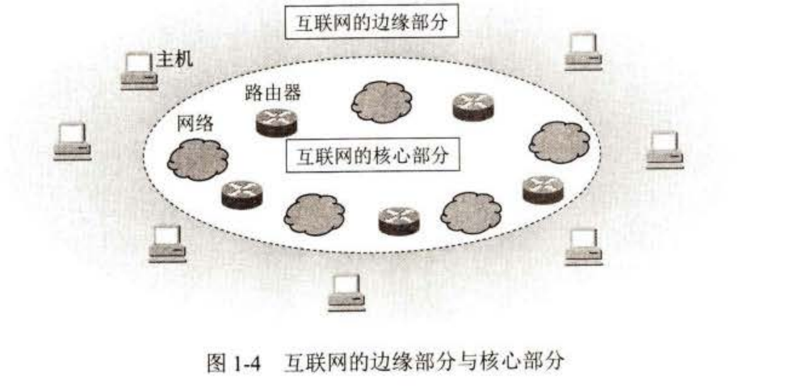
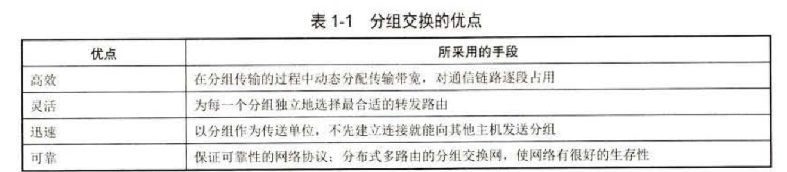
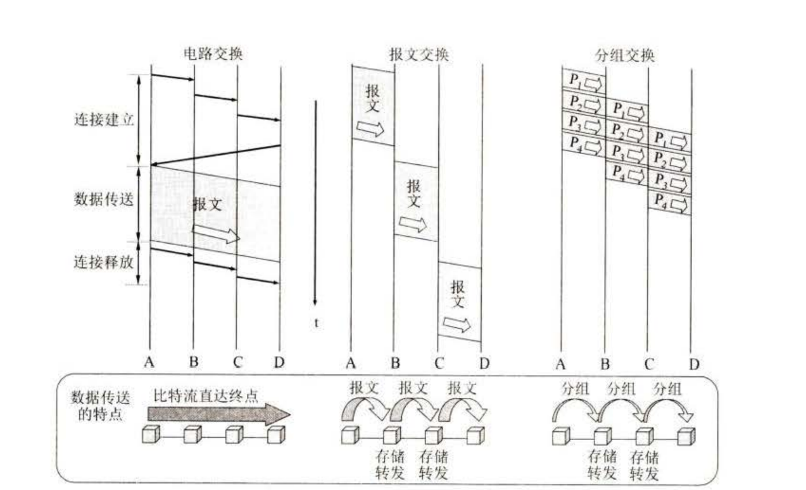
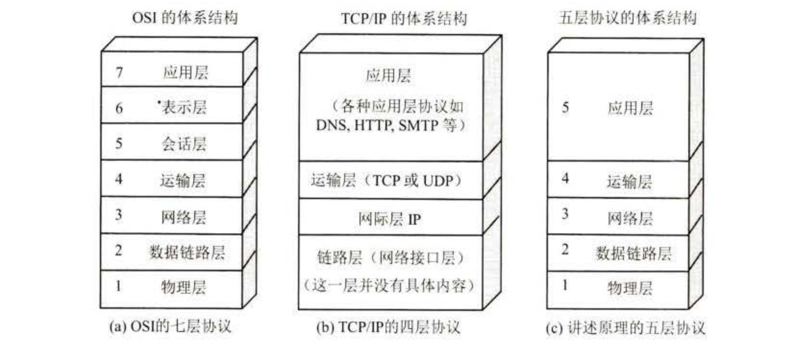

计算机网络笔记概论
计算机网络笔记概要
第一张 概论
计算机网络简称为网络由若干节点和连接这些节点的链路组成，网络之间的连接构成的更大的计算机的网络称为互连网
网络把许多计算机连接在一起，而互连网则把许多网络通过一些路由器连接在一起，与网络相连的计算机通常称为主机
互联网的组成十分的复杂：分为边缘部分和核心部分。
边缘部分: 由所有连接在互联网上的主机组成，这部分是用户直接使用的，用来进行通信（传送数据，音频或视频）和资源共享
核心部分：由大量网络和连接这些网络的路由器组成，这部分是为边缘部分，提供服务的（提供连通性和交换）

明确概念：当我们谈论主机A和主机B进行通信的时候，实际上指代的是运行在主机a上的某个程序和运行在主机B上的另一个程序进行通信，由于进程就是运行着的程序，因此这也就是指主机a的某个进程和主机B的另一个进程进行通信
所以这种比较严密的说法通常可以简称为：
计算机之间的通信
计算机的通信方式主要分为两大类：客户服务器方式(也就是CS方式)，和对等方式（P2P方式）
下面先介绍客户和服务器的概念：
客户：客户程序指的是被用户调用后运行在通信时主动向远地服务器发起通信，因此客户程序必须知道服务器程序的地址，同时它并不需要特殊的硬件和很复杂的操作系统
服务器：服务器程序是一种专门用来提供某种服务的程序可同时处理多个远地或本地客户的请求。
系统启动后即一直不断的运行被动的等待并接受来自各地的客户的通信请求，因此服务器程序是并不需要知道客户程序的地址的，它一般需要有强大的硬件和高级的操作系统支持
接下来介绍对等链接方式。这是指的是两台主机在进行通信的时候既可以作为客户也可以作为服务器，有一台主机可以在向其他主机请求服务的时候同时给另一部分主机提供服务。
互联网的核心部分则是保证边缘的主机都可以和其他主机互联。在网络核心部分中起到特殊作用的是路由器：它是一种专用计算机
路由器是实现分组交换的关键构件，其任务是转发收到的分组。
交换分为电路交换（想象成电话相联）和分组交换。交换本身就是意味着按照某种动态的方式动态的分配传输线路的资源。
当被叫用户听到交换机送来的振铃、摘机后，从主叫端到被叫端就建立了一条连接。也就是一条专用的物理线路。这条连接保证了双方通信时所需的通信资源，也就是说这些资源并不会被其他用户占用。随后结束，通讯资源释放。
这种必须经过建立连接（占用通信资源）、通话（一直占用通信资源）、到释放连接（归还通信资源）这三个步骤的方式叫做电路交换
分组交换则是采用存储转发技术。通常我们把要发送的整块数据称为一个报文，在发送报文之前我们会把较长的报文划分为一个个更小的等长数据段，在每一个数据段的前面加上一些必要的控制信息组成首部后，这就构成了一个分组，或者又被称为包。而分组的首部也被称为包头。
主机是为用户进行信息处理的，并且可以和其他主机通过网络交换信息。路由器则用来转发分组，即进行分组交换。
当我们讨论互联网的核心部分中的路由器转发分组的过程时，往往把单个的网络简化成一条链路，而路由器成为核心部分的节点
路由器的路由选择是依靠协议确定的

下面我们归纳三种交换的特点：
电路交换：整个报文的比特有连续的从原点到达终点，好像在一个管道中传送
报文交换：整个报文先传送到相邻节点全部存储下来，后查找转发表转发到下一个节点
分组交换：单个分组这只是整个报文的一部分，传送到相邻结点存储下来后查找转发表，转发到下一个节点

常见网络分为：WAN, MAN, LAN, PAN等，这是按照作用范围进行划分的
对于使用者：分为公用网和专用网。
评价一个网络的性能，分为：
- 速率：指代的是传送数据的速度
- 带宽：指代的是传动数据的能力
- 吞吐量：单位时间内通过的实际数据量
- 时延：数据从一段传送到另一端所采用的事件：分为发送时延：指的是主机或路由器发送数据帧所需要的时间，有时又被称为传输时延；其二是传播时：是电磁波在信道中传播一定距离所花费的时间；第三是处理时延，然后是排队时延。
- 时延带宽积：传播时延和带宽的相乘
- 往返时间RTT
- 利用率
计算机网络体系结构：网络协议主要由以下三个要素组成：
(I) 语法，即数据与控制信息的结构或格式；
(2) 语义，即盂要发出何种控制信息，完成何种动作以及做出何种响应；
(3) 同步，即事件实现顺序的详细说明。
为什么网络协议要分层呢：
- 各个层次独立
- 灵活性好
- 结构上可以分割
- 易于维护和实现
- 可以促进标准化工作
每个层次主要有以下一种或者是多种功能：
- 差错控制
- 流量控制
- 分段和重装
- 复用和分用
- 连接建立和释放
计算机网络的各层及其协议的集合就是网络的体系结构，换种说法：计算机网络的体系结构就是这个计算机网络及其构件所完成的功能的精确定义
